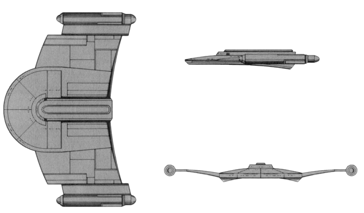

V-6 Gallant Wing-class Light Cruiser (RSE)

Battle Stats
Engines and Superstructure
Total Power Units - 52 (Warp Engines - 2x24, Impulse Engines - 4)
MPR - 3/1
Superstructure - 26
Maximum Warp - 1
Beam Weapons (Disruptors)
Max Power - 6
Firing Chart - W
Arcs - 2F/P, 2F/S, 2F
Bonuses - +3(1-8) +2(9-16) +1(17-20)
Missile Weapons (Plasma Torpedoes)
Power to Arm - 15
Damage - See chart
Firing Chart - M
Arcs - 1F
Deflector Shields
Max Shield Power - 14
SPR - 1/3
Plasma Torpedo Damage Chart
Range | Damage
1-3 | 32
4-6 | 24
7-8 | 20
9-10 | 16
11-12 | 12
13-14 | 8